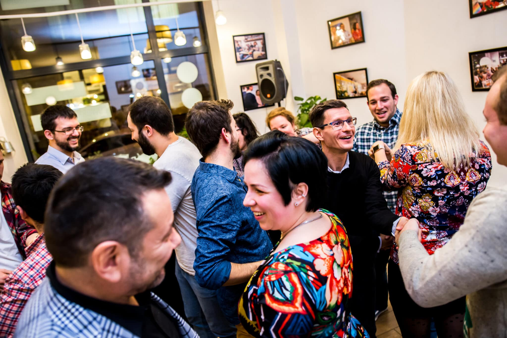
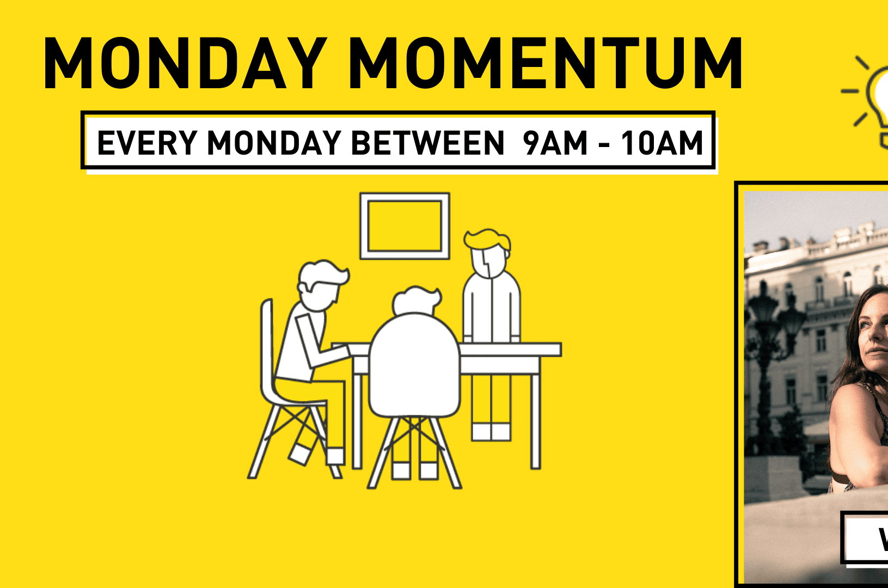
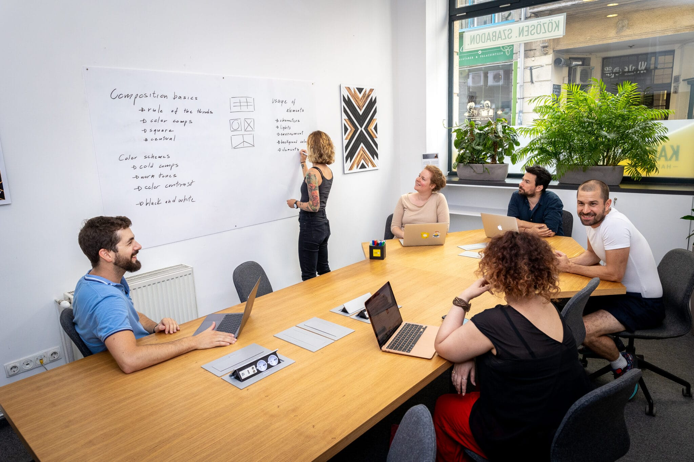

Blog
MUNKA KÖZBEN FELFEDEZNI A VILÁGOT?
A digital nomád életstílus évek óta egyre népszerűbb, és ez
TOVÁBB

Események
MONDAY MOMENTUM ▶️ HÉTFŐNKÉNT
A digital nomád életstílus évek óta egyre népszerűbb, és ez
JELENTKEZEM

Ajánlatok
PRIVÁT IRODA A BELVÁROSBAN!
A digital nomád életstílus évek óta egyre népszerűbb, és ez
TOVÁBB